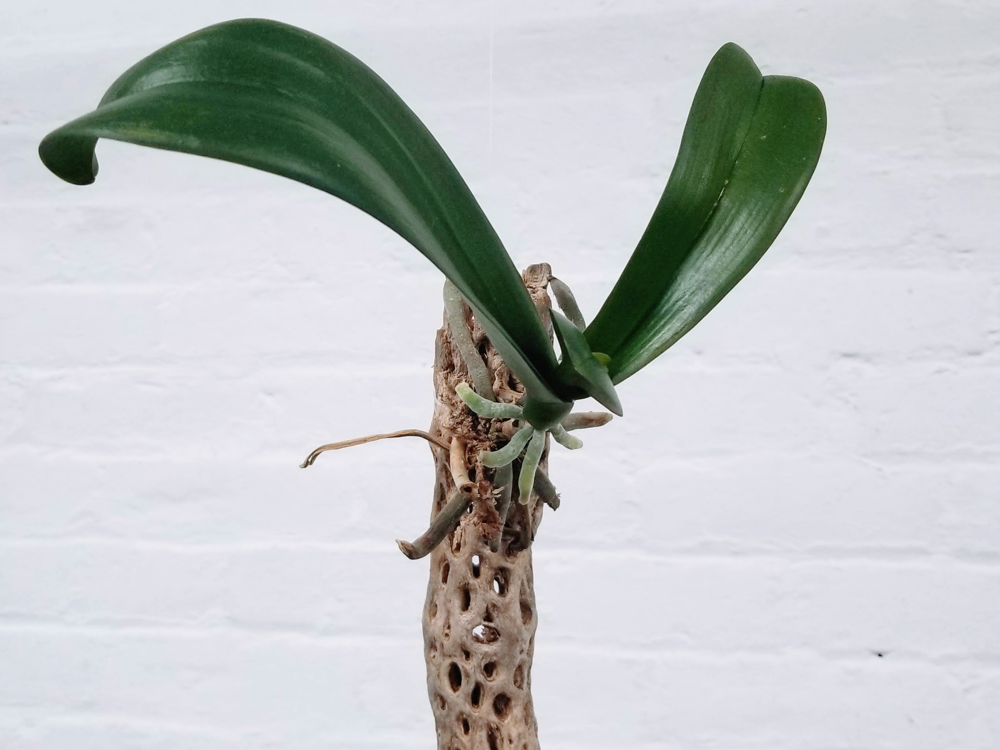

| driftwood from a secluded beach + discarded orchids from a veterinarian’s office | ||
|---|---|---|
|  | ||
On the island of Kauai I noticed orchid roots wrapping around a palm tree.
The roots were several feet long, anchoring the plant firmly against the trunk
On a desolate beach in Mexico I noticed unusual-looking pieces of driftwood.
I paced the high water mark for 3 days collecting interesting specimen.
I could only carry 4 pieces of wood at a time so I only kept the best pieces.
At a veterinarian’s office in TriBeCa, orchids were being discarded after their blooms had begun to fade.
If properly cared for, an orchid will re-bloom dozens of times.
Think of it like a pet
A driftwood orchid requires the same amount of care as a goldfish.
All you have to do is mist it once or twice a day.
This means If you go on vacation then you must bring it with you.
Although they are delicate, driftwood orchids are also portable.
People will be delighted to see you traveling with your pet orchid.
Or you can get someone else to take care of it while you’re away.
Orchids can handle a wide range of light conditions from indirect light to direct sunlight
If your orchids gets more sun then it will dry out quicker and require more frequent misting.
Mist it daily -- twice if you can remember
Orchids prefer rain water, but that’s asking a lot.
If you mist with tap water, allow it to sit out uncovered overnight so that any chlorine evaporates.
My happiest driftwood orchids lives on a hook above the shower.
It does not even get wet directly -- the roots extract plenty of moisture from the air.